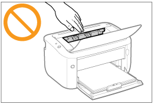

|
VARNING
|
|
Montera inte isär eller ändra skrivaren. Inuti skrivaren finns varma och strömförande komponenter som kan orsaka brand eller elektriska stötar.
Elektrisk utrustning kan vara farlig om den inte hanteras på rätt sätt. Håll barn på avstånd från nätkabel och övriga kablar, maskinens inre och elektriska delar.
Om du observerar missljud, rök, ovanlig värme eller lukt ska du genast stänga av skrivaren med strömbrytaren och dra ur eventuella gränssnittskablar. Dra sedan ur nätkabeln ur vägguttaget och kontakta din lokala Canon-återförsäljare. Fortsatt användning kan resultera i brand eller elektriska stötar.
Använd inte brandfarliga sprayer i närheten av skrivaren. Brandfarliga ämnen som kommer i kontakt med elektriska delar inuti skrivaren kan resultera i brand eller elektriska stötar.
Stäng alltid av skrivaren med strömbrytaren och dra ur nätkabel och gränssnittskablar innan du flyttar den. I annat fall kan kablarna skadas vilket kan resultera i brand eller elektriska stötar.
Kontrollera att nätkabeln och kontakten sätts i ordentligt efter att skrivaren har flyttats. I annat fall kan det resultera i överhettning och brand.
Se till att inte gem, häftklamrar eller andra metallföremål ramlar ned i skrivaren. Se också till att vatten och andra vätskor eller brandfarliga ämnen (alkohol, bensin, lacknafta m.m.) inte kommer i kontakt med skrivaren. Om sådana ämnen kommer i kontakt med de strömförande delarna inuti skrivaren kan det resultera i brand eller elektriska stötar. Om sådana ämnen droppar ned i eller spills ut i skrivaren måste du genast stänga av skrivaren med strömbrytaren och dra ur eventuell gränssnittskabel. Dra sedan ur nätkabeln ur vägguttaget och kontakta din lokala Canon-återförsäljare.
Rör inte metalldelen på kontakten om du sätter i eller drar ur en USB-kabel medan nätkabeln är ansluten till ett vägguttag. Det kan leda till en elektrisk stöt.
|
|
OBSERVER
|
|
Ställ inte tunga föremål på skrivaren. Föremålet kan falla ned och orsaka personskada.
Stäng av skrivaren med strömbrytaren när du inte tänker använda den mer under arbetsdagen. Stäng av skrivaren och dra ur nätkabeln om skrivaren inte ska användas under en längre tid, t.ex. flera dagar.
Öppna och stäng luckorna lugnt och försiktigt. Var försiktig så att du inte skadar fingrarna.
Håll händer och kläder på avstånd från rullen i utmatningsområdet. Även om skrivaren inte skriver ut kan rullen plötsligt börja rotera. Personskador kan uppstå om du fastnar med händerna eller kläderna.
Utmatningsfacket kan vara varmt under och omedelbart efter utskriften. Vidrör inte området runt utmatningsfacket. Det finns risk för brännskador.
 Utskrivna ark kan vara varma omedelbart efter att de skrivits ut. Var försiktig när du tar ur papper och justerar papperskanterna, i synnerhet efter kontinuerlig utskrift. Det finns risk för brännskador.
Laserstrålen som används i skrivaren kan vara skadlig för människor. Laserstrålen är skyddad i laserenheten och det finns ingen risk för att laserljus tränger ut under normal drift. Läs noga följande information som rör säkerhet.
Öppna aldrig andra luckor än de som anges i handboken.
Ta inte bort varningsetiketten som sitter på luckan till laserenheten.
 Om laserstrålen träffar ögonen kan de skadas.
|